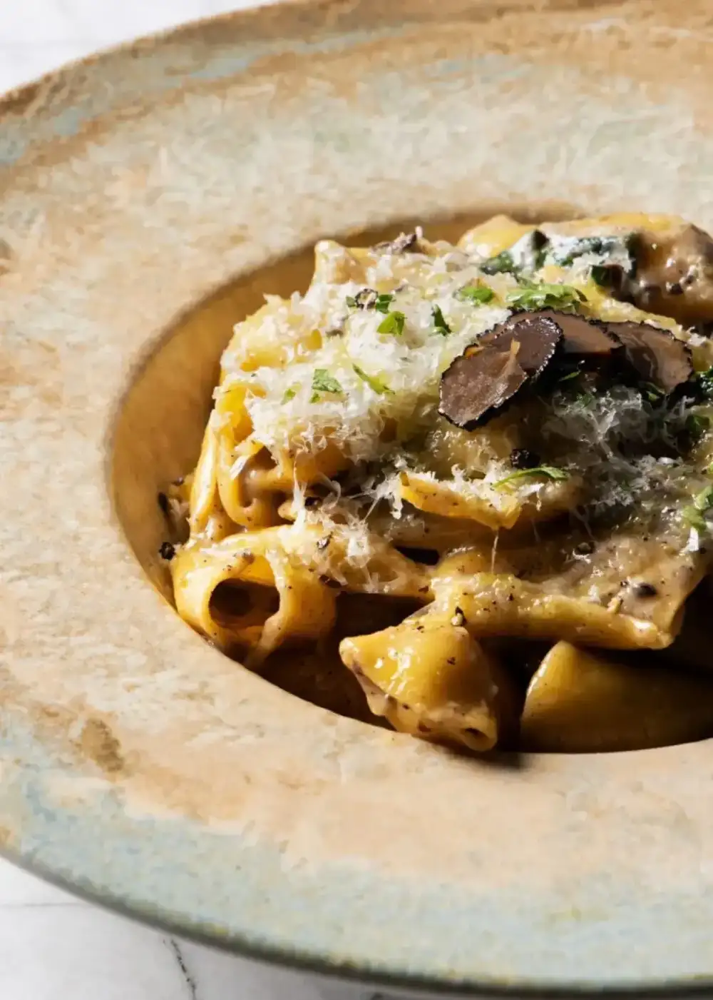
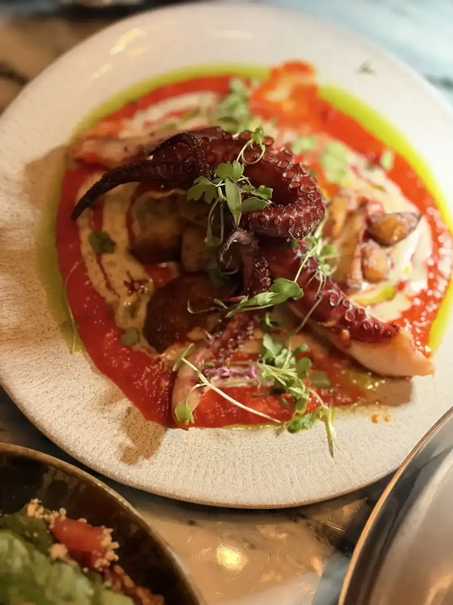
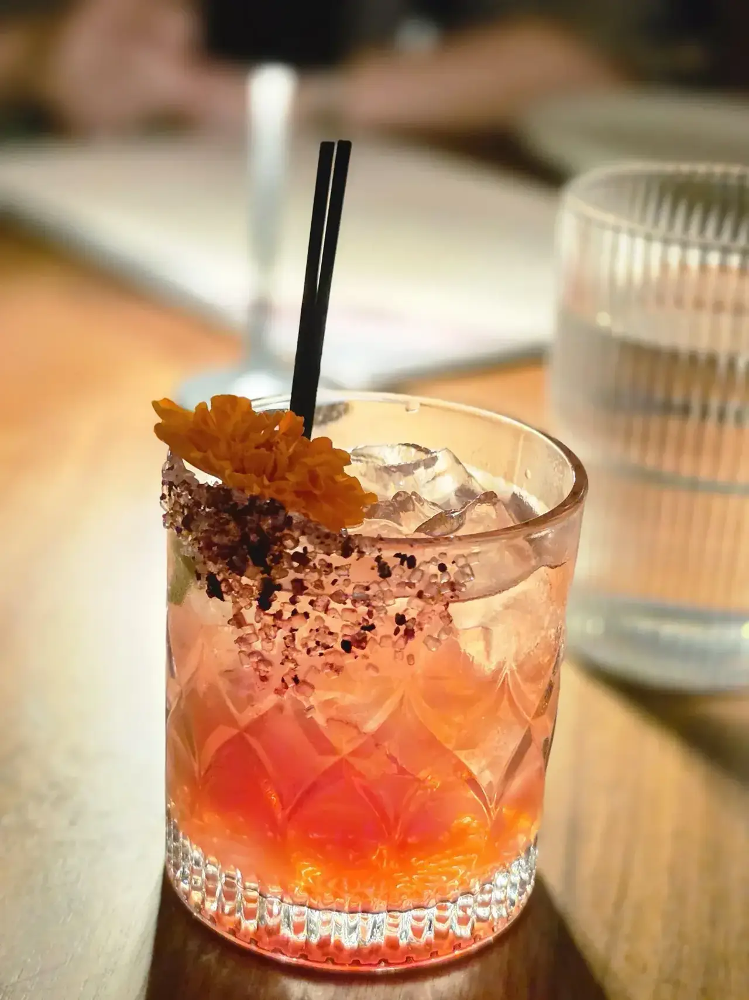

Antipasti and pasta
Antipasti to share, like marinara meatballs and burrata al limoncello, then primi: cacio e pepe, lobster ravioli, black truffle pipette.
V Modern Italian · Temple Terrace
V Modern Italian serves Temple Terrace from Tampa.
V Modern Italian is based in Tampa and works with customers from Temple Terrace. Call (656) 218-4022 to ask about timing and directions.
Come feed all your senses
Built to be enjoyed in courses, with a cocktail to start.

Antipasti to share, like marinara meatballs and burrata al limoncello, then primi: cacio e pepe, lobster ravioli, black truffle pipette.

USDA Prime filet and ribeye, 28-day dry-aged, a Wagyu strip, grilled branzino and lamb shank.

A martini tower and a cocktail carousel for the table, aperitivi, and the cannoli concierge, filled tableside.
4.7 / 5 · 668 Google reviews
1Such a vibe ! Great music, beautiful atmosphere, fun seating. Nice cocktails, good food. Mingling crowd, excellent service. We loved this place and if you want to lounge, dance, walk or chill it has it all. Our server Ashley was great we enjoyed her knowledge and had a great time.
2We had a great time Sunday afternoon (it wasn’t too crowded at the time). The food and the drinks were great, beautiful interior. They have a private room for special events. Try lemon dessert and the cannoli table side experience! Max Anthony took great care of us. Note: You may want to bring a blazer or wear long sleeve as it was rather chill.
3I found out about this place through Google for finding a spot for a nice dinner date with music for my birthday. The atmosphere was phenomenal and very nice! The music is very loud like in the clubs, but it is very entertaining with great songs that DJ played. This is perfect for a date night or out with friends to celebrate! The foods were so delicious!!